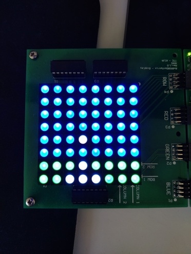
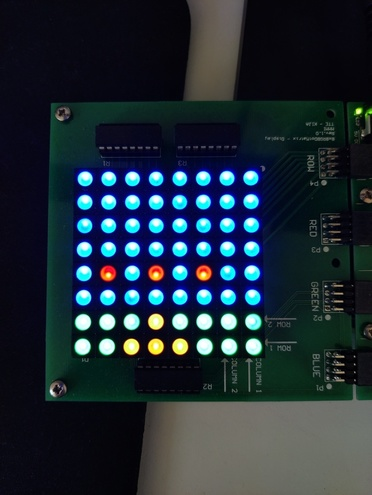
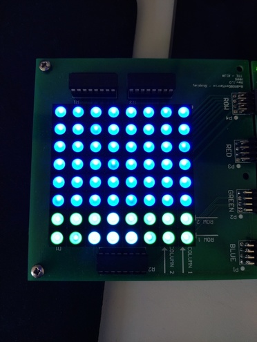

If a piece of enhancing technology is dropped by attacking UFOs, it can be used by engineers to gain a temporary power-up of the cannon.
On this page, information is displayed about the potential benefits this may have.
Extra Life
This technology grants earth's defenders one more chance, as it destroys a landing UFO. You may have no more than 4 lives, which are shown by the LEDs.
Big Bullets
The bullets fired by the cannon are super-charged, dealing much more damage for a short period of time. Both the cannon and bullets will be glowing hot-white.

Figure: Picture of Cannon with Big Bullets Power-Up on the LED Matrix
Tri-Bullets
The cannon now fires three bullets in a cone, allowing it to shoot multiple targets at once, for a short period of time.

Figure: Picture of Cannon with Tri-Bullets Power-Up on the LED Matrix
Freeze
All incoming UFOs are temporarily suspended in mid-air, allowing a short break to destroy them.

Figure: Picture of Cannon with Freeze Power-Up on the LED Matrix